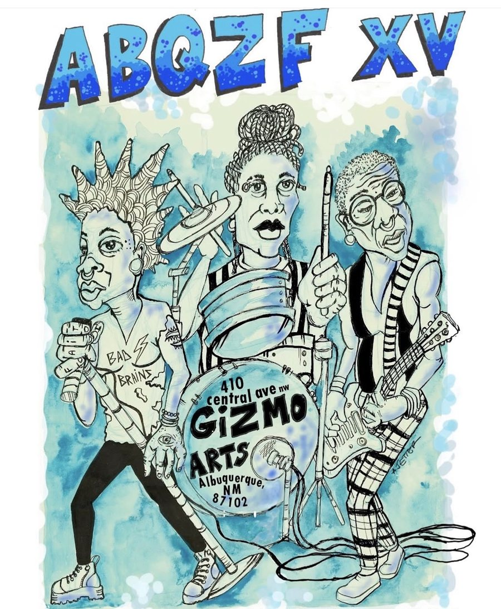
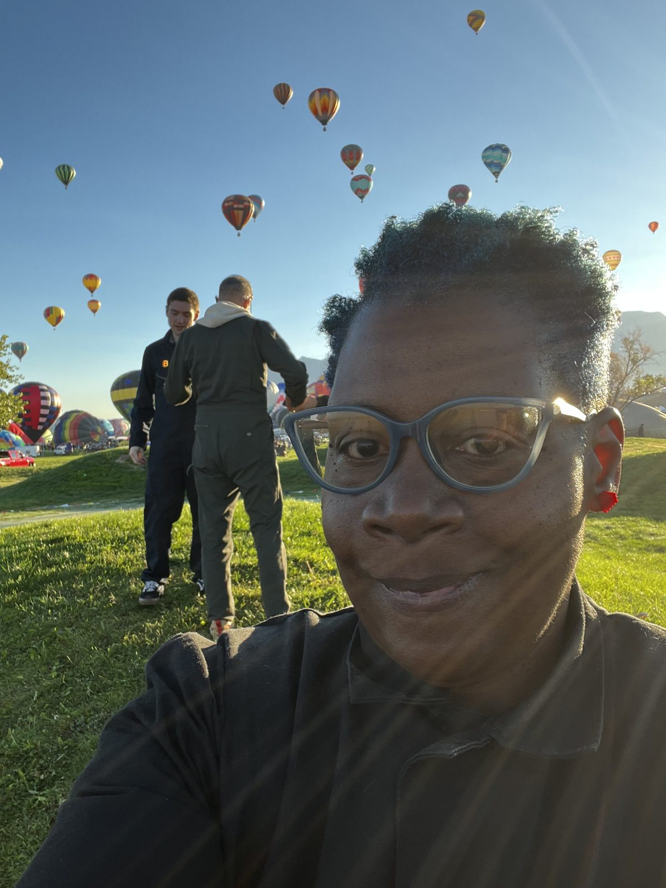

Zines // Community
Building Community By Throwing a Zine Fest
Before zines, pamphlets
A Short History of Zines
A brief history of zines starts with the pamphlet. A pamphlet is a booklet with no hard cover and no binding. It can be a single sheet printed on both sides and folded in half, in thirds or in fourths, which is called a leaflet. Or it can be a few pages folded in half and stapled through the crease to make a simple book. Pamphlets were political, and in some countries they were considered slanderous.
The name comes from a twelfth-century comic love poem in Latin, Pamphilus, a short work that traveled on its own, without covers. By around 1387 the word had come into Middle English as pamphilet or panflet.
1100s → 1990s
Pamphlets, presses and copiers
Munich · June 1942 – February 1943
The White Rose
Between June 1942 and February 1943, a circle of students in Munich wrote and distributed leaflets against Hitler and the war. The core of the White Rose was five students in their early twenties: Sophie Scholl, her brother Hans Scholl, Alexander Schmorell, Willi Graf and Christoph Probst. Kurt Huber, a professor of philosophy, was also a member.
Alexander Schmorell and Hans Scholl wrote the first four leaflets. They typed them on a borrowed typewriter, as many copies as they could make, probably no more than a hundred, and distributed them throughout Germany.
On February 18, 1943, Hans and Sophie were seen leaving leaflets at the University of Munich and were arrested. Christoph Probst was arrested soon after. On February 22 the three were brought before the People’s Court, sitting in Munich with its head judge, Roland Freisler, presiding. The trial lasted only a few hours. They were convicted of treason and sentenced to death, and only hours later they were executed by guillotine. All three faced their deaths bravely. Hans cried out his last words, “Long live freedom!”
Later that same year, other members of the White Rose were tried and executed: Alexander Schmorell (age 25), Willi Graf (age 25) and Kurt Huber (age 49). Most of the other students convicted for their part in the group’s activities received prison sentences.
Before they died, several members believed their execution would stir university students and other anti-war citizens to rally against Hitler and the war. Accounts suggest it did not. Students went on with their studies, other citizens said nothing, and many regarded the group as anti-national. Their actions were mostly dismissed until after the war, when Germany came to honor them.
Before we begin to think that the days of consequence the White Rose Resistance faced are over…
In June 2026, a federal judge in Fort Worth, Texas, sentenced Daniel Sanchez Estrada to 30 years in prison. He was not accused of attending the July 4, 2025, protest outside the Prairieland Detention Center, an ICE facility where an officer was shot and wounded. He was convicted of concealing evidence for moving a box of antifascist zines afterward. His defense said the zines were his own and protected speech. Prosecutors argued that moving the box helped the man accused of the shooting, who was a fugitive at the time.
Modern zine making
Fanzines
Fans started making their own magazines about the things they loved.
- Science fiction
- Media
- Comics
- Horror film
- Rock & roll
- Punk
- Mod
- Local music
- Role-playing games
- Video games
- Wargaming
- Sport
Albuquerque, New Mexico · Year fifteen
ABQ Zine Fest XV

ABQZF, now in its fifteenth year, is the oldest organized zine event in New Mexico. ABQZF is community-accountable and fosters a non-competitive, diverse, queer-friendly, creative environment for zinesters in the City of Albuquerque and beyond. ABQZF is a Black woman-founded, co-conspirator-supported, people-powered, queer-minded literary festival.
ABQ Zine Fest XV · Gizmo Arts
This year at the fest
About the author
Marya Errin Jones

Marya Errin Jones is an interdisciplinary artist and playwright working with lo-fi puppetry, loop pedals, and mixed media. Her work has been presented at HERE Arts Center, and Brown University. She founded ABQ Zine Fest, now in its 15th year. Marya is also a founder and curator of the now sunsetted music/artspace, The Tannex. Marya has received grants from the Jim Henson Foundation and the Andy Warhol Foundation. Her zines are archived at MIT, Tate Modern, and Barnard College.
Currently, Marya is a PhD student in American Studies at the University of New Mexico, where she explores Black Feminist Technoscience, Afro-futurism, temporality, and experimental performance. Her writing appears in Hyperallergic, Southwest Contemporary, and Critical Stages/Scènes critiques. Marya is a 2024 finalist of New York Theatre Workshop’s 2050 Artistic Fellowship.
Other projects
Sources
Democracy Now! “Prairieland Nine.” June 25, 2026.
Sledge, Matt. “Prairieland Defendant Sentenced to 30 Years in Prison for Moving a Box of Antifascist Zines.” The Intercept, June 23, 2026.
“Zines Used as Evidence to Convict in Prairieland Case.” The Beat.